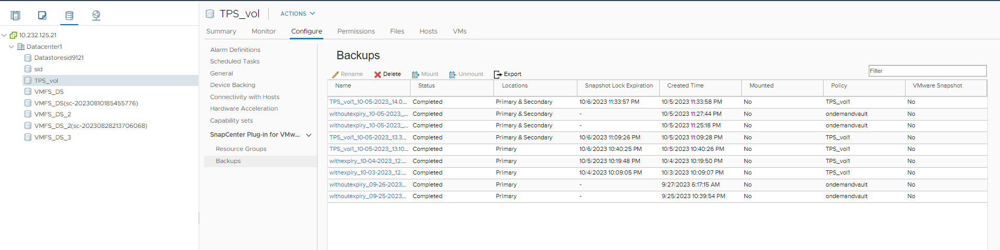

概念
概念
管理备份
 建议更改
建议更改
您可以重命名和删除适用于 VMware vSphere 的 SnapCenter 插件执行的备份。您也可以同时删除多个备份。
重命名备份
如果要提供更好的名称以提高可搜索性，您可以重命名适用于 VMware vSphere 的 SnapCenter 插件备份。
-
单击 * 菜单 * 并选择 * 主机和集群 * 菜单选项，然后选择一个虚拟机，再选择 * 配置 * 选项卡，然后单击 * 适用于 VMware vSphere 的 SnapCenter 插件 * 部分中的 * 备份 * 。

-
在配置选项卡上，选择备份，然后单击 * 重命名 * 。
-
在 * 重命名备份 * 对话框中，输入新名称，然后单击 * 确定 * 。
请勿在虚拟机，数据存储库，策略，备份或资源组名称中使用以下特殊字符： & * $ # @ ！\ / ： * ？" < >-| ； " ，。允许使用下划线字符（ _ ）。
删除备份
如果您不再需要备份来执行其他数据保护操作，则可以删除适用于 VMware vSphere 的 SnapCenter 插件备份。您可以同时删除一个备份或多个备份。
您不能删除已挂载的备份。您必须先卸载备份，然后才能将其删除。
二级存储上的 Snapshot 副本由 ONTAP 保留设置管理，而不是由 SnapCenter VMware 插件管理。因此，在使用 SnapCenter VMware 插件删除备份时，主存储上的 Snapshot 副本会被删除，但二级存储上的 Snapshot 副本不会被删除。如果二级存储上仍存在 Snapshot 副本，则 SnapCenter VMware 插件会保留与备份关联的元数据，以支持还原请求。当 ONTAP 保留过程删除二级 Snapshot 副本时， SnapCenter VMware 插件将使用定期执行的清除作业删除元数据。
-
单击 * 菜单 * 并选择 * 主机和集群 * 菜单选项，然后选择一个虚拟机，再选择 * 配置 * 选项卡，然后单击 * 适用于 VMware vSphere 的 SnapCenter 插件 * 部分中的 * 备份 * 。
-
选择一个或多个备份，然后单击 * 删除 * 。
最多可以选择 40 个要删除的备份。
-
单击 * 确定 * 确认删除操作。
-
单击左侧 vSphere 菜单栏上的刷新图标以刷新备份列表。